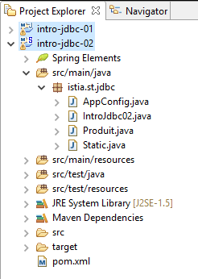
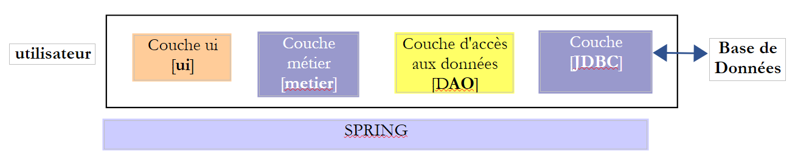
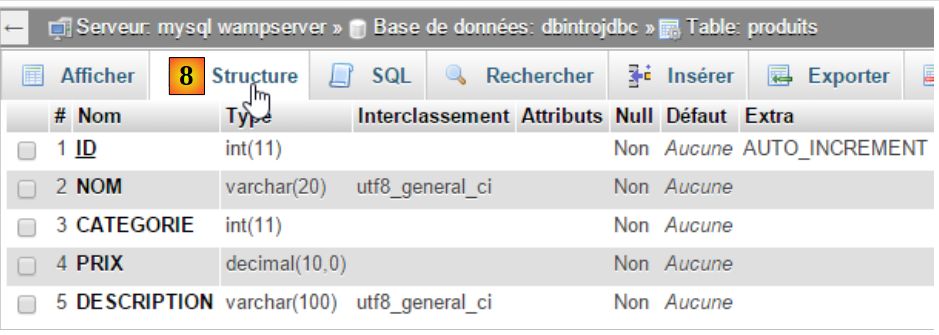
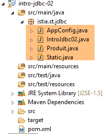

6. [Cours]: Introdução ao API JDBC
Palavras-chave: bases de dados relacionais, API JDBC, SQLException.
6.1. Support
 |  |  |
A pasta [support / chap-06] contém os projetos Eclipse deste capítulo.
6.2. Architecture
 |
A camada JDBC (Java DataBase Connectivity) é uma interface de acesso universal a bases de dados. Apresenta sempre a mesma interface para a camada [DAO]. Se se mudar de SGBD, basta alterar o controlador JDBC. A camada [DAO] não se altera.
6.3. As etapas de exploração de uma base de dados
 |
Na arquitetura acima, a operação de uma base de dados pelo programa de consola envolve as seguintes etapas:
- carregamento do controlador JDBC da base de dados;
- abertura de uma ligação com a base de dados;
- emissão de um comando SQL na base de dados e processamento dos resultados do comando SQL;
- encerramento da ligação;
O passo 1 é executado apenas uma vez. Os passos 2 a 4 são repetidos. Note-se que não se deixa uma ligação aberta. Fecha-se assim que deixar de ser necessária.
6.3.1. passo 1 - carregamento na memória do controlador JDBC
O código
// carregamento do controlador JDBC
try {
Class.forName(nom de la classe du pilote JDBC);
} catch (ClassNotFoundException e1) {
// tratar a exceção
}
A operação da linha 3 tem como objetivo carregar na memória o controlador JDBC da base de dados. Esta operação só precisa de ser realizada uma vez. No entanto, repeti-la não causa qualquer erro. A classe do controlador JDBC é procurada no Classpath do projeto. Por isso, no projeto Eclipse, o ficheiro [jar], que contém a classe do controlador JDBC, deve ter sido incluído no Classpath do projeto.
6.3.2. Passo 2 - abertura de uma ligação
Assim que o controlador JDBC estiver instalado, solicita-se que este abra uma ligação com o BD:
O código
package spring.jdbc;
import java.sql.Connection;
import java.sql.DriverManager;
import java.sql.PreparedStatement;
import java.sql.ResultSet;
import java.sql.SQLException;
public class IntroJdbc01 {
...
Connection connexion = null;
PreparedStatement ps = null;
ResultSet rs = null;
try {
// abertura da ligação
connexion = DriverManager.getConnection(url, user, passwd);
...
} catch (SQLException e1) {
// a exceção está a ser tratada
...
} finally {
// fechar a ligação
if (connexion != null) {
try {
connexion.close();
} catch (SQLException e2) {
// tratar a exceção
...
}
}
}
- linhas 3-7: as classes de implementação da interface JDBC encontram-se todas no pacote [java.sql]. Além disso, em caso de erro, todas lançam uma exceção do tipo [SQLException] (linhas 19 e 27). Esta exceção deriva da classe [Exception] e é uma exceção dita «controlada»: é obrigatório utilizar um try/catch para a gerir ou, em alternativa, não a gerir e indicar que o método permite que a exceção seja lançada, completando a assinatura do método com [throws SQLException];
- linha 17, [DriverManager.getConnection] é um método estático que espera três parâmetros:
- [url]: o URL da base de dados. Trata-se de uma cadeia de caracteres dependente do BD utilizado. Para MySQL, tem o formato [jdbc:mysql://localhost:3306/nom_de_la_bd];
- [user]: o proprietário da ligação;
- [passwd]: a sua palavra-passe;
- linhas 24-30: a ligação deve ser encerrada na cláusula [finally], para que seja encerrada independentemente de ocorrer ou não uma exceção.
6.3.3. Etapa 3 — emissão de comandos SQL e [SELECT]
Assim que a ligação for estabelecida, é possível emitir ordens SQL. A forma de gerir as ordens de leitura [SELECT] difere da utilizada para as operações de atualização [UPDATE, INSERT, DELETE]. Começamos pelas ordens SQL e [SELECT]:
O código
Connection connexion = null;
PreparedStatement ps = null;
ResultSet rs = null;
try {
// início da sessão
connexion = DriverManager.getConnection(url, user, passwd);
// início da transação
connexion.setAutoCommit(false);
// em modo de leitura
connexion.setReadOnly(true);
// a tabela [PRODUITS] está a ser lida
ps = connexion.prepareStatement("SELECT ID, NOM, CATEGORIE, PRIX, DESCRIPTION FROM PRODUITS");
rs = ps.executeQuery();
System.out.println("Liste des produits : ");
while (rs.next()) {
System.out.println(new Produit(rs.getInt(1), rs.getString(2), rs.getInt(3), rs.getDouble(4), rs.getString(5)));
}
// confirmação da transação
connexion.commit();
} catch (SQLException e1) {
// tratando a exceção
doCatchException(connexion,e1);
} finally {
// processa o finally
doFinally(rs, ps, connexion);
}
private void doFinally(ResultSet rs, PreparedStatement ps, Connection connexion) {
....
}
- linhas 8, 10: abertura de uma transação (linha 8) em modo de leitura apenas (linha 10). Uma transação é uma sequência de ordens SQL que ou são todas bem-sucedidas ou todas falham. Assim, numa transação que inclua N ordens SQL, se a ordem I+1 falhar, as I anteriores serão anuladas. Para uma operação de leitura, não é necessária uma transação. No entanto, criar uma transação em modo de leitura apenas pode permitir que certas ordens SGBD realizem algumas otimizações;
- linha 12: utilização de um [PreparedStatement]. Um [PreparedStatement] tem normalmente parâmetros indicados pelo caractere ?. Aqui, não os tem. Um [PreparedStatement] é uma ordem preparada pelo SGBD. Esta preparação tem um custo e é realizada apenas uma vez. Posteriormente, esta ordem preparada é executada pelo SGBD com diferentes parâmetros efetivos que irão substituir os parâmetros formais «?». Note-se que é preferível nomear as colunas pretendidas em vez de utilizar a notação * para obter todas as colunas. Ao especificar o nome das colunas, é possível obter os seus valores a partir da sua posição na consulta SELECT;
- linha 13: execução do [PreparedStatement]. Recupera-se um objeto do tipo [ResultSet];
Um objeto do tipo [ResultSet] representa uma tabela, ou seja, um conjunto de linhas e colunas. Num determinado momento, só se tem acesso a uma linha da tabela, denominada linha atual. Aquando da criação inicial do [ResultSet], não existe nenhuma linha atual. É necessário executar uma operação [ResultSet.next()] para a obter. A assinatura do método next é a seguinte:
Este método tenta passar para a linha seguinte do [ResultSet] e devolve true se for bem-sucedido, false caso contrário. Em caso de sucesso, a linha seguinte torna-se a nova linha atual. A linha anterior é perdida e não será possível voltar atrás para a recuperar.
A tabela [ResultSet] possui colunas denominadas labelCol1, labelCol2, ... especificadas na consulta [SELECT] executada. Com a consulta:
SELECT ID as myId, NOM as myNom, CATEGORIE as myCategorie, PRIX as myPrix, DESCRIPTION as myDescription FROM PRODUITS
- a coluna [ID] será transferida para uma coluna do [ResultSet] denominada [myId];
- a coluna [NOM] será transferida para uma coluna do [ResultSet] denominada [myNom];
- ...
No exemplo acima, os identificadores [myCol] são designados por rótulos de coluna. Na ausência destes rótulos, os nomes das colunas do [ResultSet] dependem do SGBD. Quando o [SELECT] opera sobre uma única tabela, os rótulos das colunas serão, por predefinição, os nomes das colunas solicitados pelo SELECT. O problema surge quando o [SELECT] opera sobre várias tabelas e nestas existem nomes de colunas idênticos, como no exemplo seguinte:
SELECT PRODUITS.NOM, CATEGORIES.NOM FROM PRODUITS, CATEGORIES WHERE PRODUITS.CATEGORIE_ID=CATEGORIES.ID
supondo que a tabela [PRODUITS] tenha uma chave estrangeira para a tabela [CATEGORIES], simbolizada pela relação [Produits].CATEGORIE_ID --> [CATEGORIES].ID, e que as tabelas [PRODUITS] e [CATEGORIES] tenham ambas um campo [NOM]. Neste caso, os nomes atribuídos na tabela [ResultSet] às colunas [PRODUITS.NOM] e [CATEGORIES.NOM] dependem da tabela SGBD. Para a portabilidade entre o SGBD, é necessário, portanto, utilizar aqui os rótulos das colunas, pelo que se escreverá:
SELECT PRODUITS.NOM as p_NOM, CATEGORIES.NOM as c_NOM FROM PRODUITS, CATEGORIES WHERE PRODUITS.CATEGORIE_ID=CATEGORIES.ID
Para explorar os diferentes campos da linha atual do [ResultSet], dispõe-se dos seguintes métodos:
para obter a coluna denominada «labelColi» da linha atual e, consequentemente, a coluna do [SELECT] com esse rótulo. Type designa o tipo do campo coli. Podem ser utilizados os seguintes métodos [getType]: getInt, getLong, getString, getDouble, getFloat, getDate, ... Em vez de utilizar o nome da coluna, pode utilizar-se a sua posição na consulta [SELECT] executada:
onde i é o índice da coluna pretendida (i>=1).
- linhas 15-17: recuperação dos valores lidos na consulta BD;
- linha 19: a transação é validada (também se diz «confirmada»). Isto encerra-a e liberta os recursos que a transação SGBD tinha mobilizado para ela;
- linha 25: os recursos são libertados na transação [finally]. Esta transação chama o método [doFinally] seguinte:
private void doFinally(ResultSet rs, PreparedStatement ps, Connection connexion) {
// encerramento de ResultSet
if (rs != null) {
try {
rs.close();
} catch (SQLException e1) {
}
}
// encerramento [PreparedStatement]
if (ps != null) {
try {
ps.close();
} catch (SQLException e2) {
}
}
if (connexion != null) {
try {
// encerrar a ligação
connexion.close();
} catch (SQLException e3) {
// tratar a exceção
}
}
}
- linhas 3-9: encerramento do [ResultSet];
- linhas 11-17: encerramento do [PreparedStatement];
- linhas 18-27: encerramento da ligação;
Os encerramentos nas linhas 3-17 parecem redundantes, na medida em que a ligação é encerrada nas linhas 18-25. Na verdade, em alguns casos não o são e é aconselhável mantê-los ([http://stackoverflow.com/questions/4507440/must-jdbc-resultsets-and-statements-be-closed-separately-although-the-connection]).
- linha 22: a exceção é tratada pelo método [doCatchException] seguinte:
private static void doCatchException(Connection connexion, Throwable th) {
// anular transação
try {
if (connexion != null) {
connexion.rollback();
}
} catch (SQLException e2) {
// tratar a exceção
}
}
- linhas 4-6: a transação é anulada. Isto encerra-a e o SGBD poderá libertar os recursos mobilizados para a mesma;
6.3.4. Etapa 3 — emissão das ordens SQL e [INSERT, UPDATE, DELETE]
As ordens SQL e [INSERT, UPDATE, DELETE] são operações de atualização: alteram a base de dados, mas não devolvem nenhuma linha. A única informação fornecida é o número de linhas afetadas pela operação de atualização.
O código
Connection connexion = null;
PreparedStatement ps = null;
try {
// abrir ligação
connexion = DriverManager.getConnection(url, user, passwd);
// início da transação
connexion.setAutoCommit(false);
// em modo de leitura/gravação
connexion.setReadOnly(false);
// atualização da tabela
ps = connexion.prepareStatement("UPDATE PRODUITS SET PRIX=PRIX*1.1 WHERE CATEGORIE=?");
// categoria 1
ps.setInt(1, 10);
// execução
int nbLignes=ps.executeUpdate();
// confirmação da transação
connexion.commit();
} catch (SQLException e1) {
// tratamos a exceção
doCatchException(connexion, e1);
} finally {
// processa-se o finally
doFinally(null, ps, connexion);
}
}
- linha 9: a ligação é utilizada para leitura e escrita;
- linha 11: um [PreparedStatement] com 1 parâmetro (simbolizado por ?). Podem existir vários parâmetros. Estes são numerados a partir de 1;
- linha 13: atribui-se o seu valor ao único parâmetro. O primeiro parâmetro de [setType] é a posição do parâmetro no [PreparedStatement] (1, 2, ...) e o segundo é o valor que lhe é atribuído. É possível utilizar os métodos [setInt, setLong, setFloat, setDouble, setString, setDate, ...];
- linha 15: utiliza-se o método [executeUpdate] e não o [executeQuery], reservado para as ordens SELECT. O método devolve o número de linhas afetadas pela operação. Pode ser 0.
- linha 17: a transação é validada;
6.3.5. etapa 4 — encerramento da ligação
Uma ligação deve ser encerrada o mais rapidamente possível num contexto multiutilizador, uma vez que um SGBD aceita um número limitado de ligações abertas. Nos exemplos anteriores, a ligação era encerrada na cláusula [finally] das operações SQL, de modo a garantir o seu encerramento independentemente de ter ocorrido ou não uma exceção.
6.4. Um projeto de exemplo
6.4.1. Suporte
 |
A pasta [support / chap5] contém os projetos Eclipse deste capítulo [1, 2]. A pasta [database] contém o script SQL que permite criar a base de dados de exemplo deste capítulo MySQL.
6.4.2. A base de dados utilizada
Os exemplos que se seguem utilizam a seguinte base de dados MySQL:
 |
- [ID]: chave primária no modo AUTO_INCREMENT (se não for indicada uma chave primária, o SGBD gera-a);
- [NOM]: nome de um produto — único;
- [CATEGORIE]: n.º da sua categoria;
- [PRIX]: o seu preço;
- [DESCRIPTION]: uma descrição do produto;
Iremos criá-la com a ferramenta [WampServer] da seguinte forma: [1-9]:
 |
 |
 |
 |
6.4.3. O projeto Eclipse
 |
O projeto é um projeto Maven definido pelo seguinte ficheiro [pom.xml]:
<project xmlns="http://maven.apache.org/POM/4.0.0" xmlns:xsi="http://www.w3.org/2001/XMLSchema-instance"
xsi:schemaLocation="http://maven.apache.org/POM/4.0.0 http://maven.apache.org/xsd/maven-4.0.0.xsd">
<modelVersion>4.0.0</modelVersion>
<groupId>istia.st.jdbc</groupId>
<artifactId>intro-jdbc-01</artifactId>
<version>0.0.1-SNAPSHOT</version>
<dependencies>
<dependency>
<groupId>mysql</groupId>
<artifactId>mysql-connector-java</artifactId>
<version>5.1.34</version>
</dependency>
<dependency>
<groupId>com.fasterxml.jackson.core</groupId>
<artifactId>jackson-databind</artifactId>
<version>2.5.1</version>
</dependency>
</dependencies>
</project>
- linhas 8-12: o controlador JDBC do SGBD MySQL5;
- linhas 13-17: uma biblioteca capaz de gerir jSON (Javascript Object Notation) (ver parágrafo 22.6). Vamos utilizá-la para apresentar os produtos da base de dados no formato jSON;
6.4.4. A classe dos produtos
A classe [Produit] é a seguinte:
package istia.st.jdbc;
import com.fasterxml.jackson.core.JsonProcessingException;
import com.fasterxml.jackson.databind.ObjectMapper;
public class Produit {
// campos
private int id;
private String nom;
private int categorie;
private double prix;
private String description;
// construtores
public Produit() {
}
public Produit(int id, String nom, int categorie, double prix, String description) {
this.id = id;
this.nom = nom;
this.categorie = categorie;
this.prix = prix;
this.description = description;
}
// getters e setters
...
// para String
public String toString() {
try {
return new ObjectMapper().writeValueAsString(this);
} catch (JsonProcessingException e) {
e.printStackTrace();
return null;
}
}
}
- linha 34: utiliza-se a biblioteca jSON para apresentar a cadeia jSON do produto. Isto resulta numa apresentação semelhante à seguinte:
Liste des produits :
{"id":1,"nom":"NOM1","categorie":1,"prix":100.0,"description":"DESC1"}
{"id":2,"nom":"NOM2","categorie":1,"prix":101.0,"description":"DESC2"}
A vantagem do método [toString] acima é que, se forem adicionados ou removidos campos da classe, o seu método [toString] continua a ser válido. Além disso, se os campos forem eles próprios objetos (listas, matrizes, dicionários, objetos de utilizador), as bibliotecas jSON sabem transformá-los, por sua vez, em cadeias jSON;
6.4.5. A classe [Static]
A classe [Static] agrupa, em métodos, o código utilizado com frequência na classe principal:
package istia.st.jdbc;
import java.util.ArrayList;
import java.util.List;
public class Static {
public static List<String> getErreursFromThrowable(Throwable th) {
// recuperar a lista de mensagens de erro da exceção
List<String> erreurs = new ArrayList<String>();
while (th != null) {
// mensagem de erro do throwable
erreurs.add(th.getMessage());
// passa-se para a causa do throwable
th = th.getCause();
}
// resultado
return erreurs;
}
public static void show(String title, List<String> messages){
// título
System.out.println(String.format("%s : ",title));
// mensagens
for(String message : messages){
System.out.println(String.format("- %s",message));
}
}
}
- linhas 8-19: permite obter a lista de erros encapsulados num objeto do tipo [Throwable], que é a classe-pai da classe [Exception];
- linhas 21-28: apresenta no ecrã uma lista de mensagens;
Este código poderia estar na classe principal, porque, neste caso, é a única a utilizá-lo. Estamos aqui perante um caso mais abrangente, em que outras classes poderiam necessitar deste código.
6.4.6. A estrutura da classe principal
package istia.st.jdbc;
import java.sql.Connection;
import java.sql.DriverManager;
import java.sql.PreparedStatement;
import java.sql.ResultSet;
import java.sql.SQLException;
public class IntroJdbc01 {
// constantes
final static String url = "jdbc:mysql://localhost:3306/dbIntroJdbc";
final static String user = "root";
final static String passwd = "";
final static String insert = "INSERT INTO PRODUITS(ID, NOM, CATEGORIE, PRIX, DESCRIPTION) VALUES (?, ?, ?, ?, ?)";
final static String delete = "DELETE FROM PRODUITS";
final static String select = "SELECT ID, NOM, CATEGORIE, PRIX, DESCRIPTION FROM PRODUITS";
final static String update = "UPDATE PRODUITS SET PRIX=PRIX*1.1 WHERE CATEGORIE=?";
final static String insert2 = "INSERT INTO PRODUITS(ID, NOM, CATEGORIE, PRIX, DESCRIPTION) VALUES (100,'X',1,1,'x')";
public static void main(String[] args) {
// carregamento do controlador JDBC de MySQL
try {
Class.forName("com.mysql.jdbc.Driver");
} catch (ClassNotFoundException e1) {
doCatchException("Pilote JDBC introuvable", null, e1);
return;
}
// esvazia-se a tabela [PRODUITS]
delete();
// preenchimento da tabela
insert();
// a tabela é lida
select();
// atualização
update();
// visualização
select();
// inserção de dois elementos idênticos
// a inserção deve falhar e nenhum dos dois elementos é inserido devido à transação
insert2();
// verifica-se
select();
// concluído
System.out.println("Travail terminé");
}
// lista de produtos
private static void select() {
...
}
// eliminação de produtos
public static void delete() {
...
}
// adição de produtos
public static void insert() {
...
}
// adição de 2 produtos
public static void insert2() {
...
}
// atualização de alguns produtos
public static void update() {
..
}
private static void doFinally(ResultSet rs, PreparedStatement ps, Connection connexion) {
// encerramento ResultSet
if (rs != null) {
try {
rs.close();
} catch (SQLException e1) {
}
}
// encerramento [PreparedStatement]
if (ps != null) {
try {
ps.close();
} catch (SQLException e2) {
}
}
// encerrar a sessão
if (connexion != null) {
try {
connexion.close();
} catch (SQLException e3) {
// são apresentadas as mensagens de erro
Static.show("Les erreurs suivantes se sont produites lors de la fermeture de la connexion",
Static.getErreursFromThrowable(e3));
}
}
}
private static void doCatchException(String title, Connection connexion, Throwable th) {
// são apresentadas as mensagens de erro
Static.show(title, Static.getErreursFromThrowable(th));
// anulação da transação
try {
if (connexion != null) {
connexion.rollback();
}
} catch (SQLException e2) {
// exibir mensagens de erro
Static.show(title, Static.getErreursFromThrowable(e2));
}
}
}
6.4.7. Eliminação do conteúdo da tabela de produtos
O método [delete] elimina o conteúdo da tabela:
// eliminação de produtos
public static void delete() {
Connection connexion = null;
PreparedStatement ps = null;
try {
// início da sessão
connexion = DriverManager.getConnection(url, user, passwd);
// início da transação
connexion.setAutoCommit(false);
// esvaziar a tabela [PRODUITS]
ps = connexion.prepareStatement(delete);
ps.executeUpdate();
// confirmação da transação
connexion.commit();
// regresso ao modo predefinido
connexion.setAutoCommit(true);
} catch (SQLException e1) {
// tratamento da exceção
doCatchException("Les erreurs suivantes se sont produites à la suppression du contenu de la table", connexion, e1);
} finally {
// processar o finally
doFinally(null, null, connexion);
}
}
Este exemplo utiliza transações. Uma transação permite agrupar ordens SQL que devem ser todas bem-sucedidas ou todas canceladas. Há quatro operações a ter em conta:
- início de uma transação: [connexion.setAutoCommit(false)];
- fim de uma transação bem-sucedida: [connexion.commit()]. Neste caso, todas as operações realizadas na BD durante a transação são validadas;
- fim de uma transação com falha: [connexion.rollback()]. Neste caso, todas as operações realizadas no BD durante a transação são anuladas;
- regresso ao modo [auto-commit], que é o modo predefinido do API JDBC: [connexion.setAutoCommit(true)]. Neste modo, cada ordem SQL é objeto de uma transação. Assim, se forem efetuadas duas inserções, das quais a segunda falha:
- no modo [AutoCommit=true], a primeira inserção mantém-se (foi validada pelo primeiro AutoCommit);
- no modo [AutoCommit=false], a primeira inserção é anulada;
Nos nossos exemplos, sempre que ocorre uma exceção, cancelamos a transação no método [doCatchException]:
private static void doCatchException(String title, Connection connexion, Throwable th) {
// exibição das mensagens de erro
Static.show(title, Static.getErreursFromThrowable(th));
// anulação da transação
try {
if (connexion != null) {
connexion.rollback();
}
} catch (SQLException e2) {
// exibindo as mensagens de erro
Static.show("Erreur lors de l'annulation de la transaction", Static.getErreursFromThrowable(e2));
}
}
6.4.8. Criação do conteúdo da tabela de produtos
O método [insert] cria o conteúdo da tabela:
// adição de produtos
public static void insert() {
Connection connexion = null;
PreparedStatement ps = null;
try {
// início da sessão
connexion = DriverManager.getConnection(url, user, passwd);
// início da transação
connexion.setAutoCommit(false);
// preenchimento da tabela
ps = connexion.prepareStatement(insert);
for (int i = 0; i < 10; i++) {
// preparação
int n = i + 1;
ps.setInt(1, n);
ps.setString(2, String.format("NOM%s", n));
ps.setInt(3, n / 5 + 1);
ps.setDouble(4, 100 * (1 + (double) i / 100));
ps.setString(5, String.format("DESC%s", n));
// execução
ps.executeUpdate();
}
// confirmação da transação
connexion.commit();
// regresso ao modo predefinido
connexion.setAutoCommit(true);
} catch (SQLException e1) {
// tratamento da exceção
doCatchException("Les erreurs suivantes se sont produites à la création du contenu de la table", connexion, e1);
} finally {
// tratando o finally
doFinally(null, null, connexion);
}
}
6.4.9. Exibição do conteúdo da tabela de produtos
O método [select] apresenta o conteúdo da tabela:
// lista de produtos
private static void select() {
Connection connexion = null;
PreparedStatement ps = null;
ResultSet rs = null;
try {
// abertura da ligação
connexion = DriverManager.getConnection(url, user, passwd);
// início da transação
connexion.setAutoCommit(false);
// leitura da tabela [PRODUITS]
ps = connexion.prepareStatement(select);
rs = ps.executeQuery();
System.out.println("Liste des produits : ");
while (rs.next()) {
System.out.println(new Produit(rs.getInt(1), rs.getString(2), rs.getInt(3), rs.getDouble(4), rs.getString(5)));
}
// confirmação da transação
connexion.commit();
// regresso ao modo predefinido
connexion.setAutoCommit(true);
} catch (SQLException e1) {
// tratamento da exceção
doCatchException("Les erreurs suivantes se sont produites à la lecture de la table", connexion, e1);
} finally {
// processar o finally
doFinally(null, null, connexion);
}
}
6.4.10. Atualização do conteúdo da tabela
O método [update] atualiza determinados produtos:
// atualização de determinados produtos
public static void update() {
Connection connexion = null;
PreparedStatement ps = null;
try {
// abertura da ligação
connexion = DriverManager.getConnection(url, user, passwd);
// início da transação
connexion.setAutoCommit(false);
// atualização da tabela
ps = connexion.prepareStatement(update);
// categoria 1
ps.setInt(1, 1);
// execução
ps.executeUpdate();
// confirmação da transação
connexion.commit();
// regresso ao modo predefinido
connexion.setAutoCommit(true);
} catch (SQLException e1) {
// trata-se a exceção
doCatchException("Les erreurs suivantes se sont produites à la mise à jour du contenu de la table", connexion, e1);
} finally {
// processar o finally
doFinally(null, null, connexion);
}
}
6.4.11. Função da transação
O método [insert2] insere dois produtos com a mesma chave primária na tabela, o que não é possível. Como estamos numa transação, a primeira inserção será anulada.
// adição de 2 produtos com as mesmas chaves primárias
public static void insert2() {
Connection connexion = null;
PreparedStatement ps = null;
try {
// abertura da ligação
connexion = DriverManager.getConnection(url, user, passwd);
// início da transação
connexion.setAutoCommit(false);
// adiciona-se 1 linha
ps = connexion.prepareStatement(insert2);
// execução
ps.executeUpdate();
// adiciona-se a mesma linha uma segunda vez, portanto com a mesma chave primária
// a inserção deve falhar e nenhum dos dois elementos deve ser inserido devido à transação
ps.executeUpdate();
// confirmar transação
connexion.commit();
// regresso ao modo predefinido
connexion.setAutoCommit(true);
} catch (SQLException e1) {
// tratamos a exceção
doCatchException("Les erreurs suivantes se sont produites lors de l'ajout", connexion, e1);
} finally {
// processa-se o finally
doFinally(null, null, connexion);
}
}
6.4.12. Resultados
A execução do método [main] produz os seguintes resultados:
6.5. Utilização de uma fonte de dados do tipo [DataSource]
Vamos retomar a aplicação anterior utilizando uma fonte de dados do tipo [javax.sql.DataSource]:

Vamos utilizar uma fonte de dados implementada pela classe [org.apache.tomcat.jdbc.pool.DataSource]. Esta classe utiliza um conjunto de ligações, ou seja, um conjunto de ligações abertas:
- quando o pool é instanciado, é aberto um determinado número de ligações à base de dados. Este número é configurável;
- quando o código Java abre uma ligação, esta é fornecida pelo conjunto;
- quando o código Java fecha uma ligação, esta é devolvida ao conjunto;
No final, as ligações são abertas apenas uma vez, o que melhora o desempenho do acesso à base de dados. A fonte de dados será definida numa classe de configuração do Spring
6.5.1. O projeto Eclipse
 |
O projeto é um projeto Maven definido pelo seguinte ficheiro [pom.xml]:
<project xmlns="http://maven.apache.org/POM/4.0.0" xmlns:xsi="http://www.w3.org/2001/XMLSchema-instance"
xsi:schemaLocation="http://maven.apache.org/POM/4.0.0 http://maven.apache.org/xsd/maven-4.0.0.xsd">
<modelVersion>4.0.0</modelVersion>
<groupId>istia.st.jdbc</groupId>
<artifactId>intro-jdbc-02</artifactId>
<version>0.0.1-SNAPSHOT</version>
<dependencies>
<!-- MySQL -->
<dependency>
<groupId>mysql</groupId>
<artifactId>mysql-connector-java</artifactId>
<version>5.1.34</version>
</dependency>
<!-- biblioteca jSON -->
<dependency>
<groupId>com.fasterxml.jackson.core</groupId>
<artifactId>jackson-databind</artifactId>
<version>2.5.1</version>
</dependency>
<!-- Spring -->
<dependency>
<groupId>org.springframework</groupId>
<artifactId>spring-context</artifactId>
<version>4.1.3.RELEASE</version>
</dependency>
<!-- Tomcat JDBC -->
<dependency>
<groupId>org.apache.tomcat</groupId>
<artifactId>tomcat-jdbc</artifactId>
<version>8.0.20</version>
</dependency>
</dependencies>
</project>
- linhas 21-25: dependência do Spring;
- linhas 27-31: dependência da biblioteca que fornece a fonte de dados;
A classe de configuração do Spring [AppConfig] é a seguinte:
package istia.st.jdbc;
import org.apache.tomcat.jdbc.pool.DataSource;
import org.springframework.context.annotation.Bean;
import org.springframework.context.annotation.Configuration;
@Configuration
public class AppConfig {
// constantes
final static String URL = "jdbc:mysql://localhost:3306/dbIntroJdbc";
final static String USER = "root";
final static String PASSWD = "";
final static String INSERT = "INSERT INTO PRODUITS(ID, NOM, CATEGORIE, PRIX, DESCRIPTION) VALUES (?, ?, ?, ?, ?)";
final static String DELETE = "DELETE FROM PRODUITS";
final static String SELECT = "SELECT ID, NOM, CATEGORIE, PRIX, DESCRIPTION FROM PRODUITS";
final static String UPDATE = "UPDATE PRODUITS SET PRIX=PRIX*1.1 WHERE CATEGORIE=?";
final static String INSERT2 = "INSERT INTO PRODUITS(ID, NOM, CATEGORIE, PRIX, DESCRIPTION) VALUES (100,'X',1,1,'x')";
final static String DRIVER_CLASSNAME = "com.mysql.jdbc.Driver";
@Bean
public DataSource dataSource() {
// fonte de dados TomcatJdbc
DataSource dataSource = new DataSource();
// configuração de acesso JDBC
dataSource.setDriverClassName(DRIVER_CLASSNAME);
dataSource.setUsername(USER);
dataSource.setPassword(PASSWD);
dataSource.setUrl(URL);
// uma ligação inicialmente aberta
dataSource.setInitialSize(1);
// resultado
return dataSource;
}
}
- linhas 11-19: as constantes anteriormente definidas em [IntroJdbc01] foram transferidas para [AppConfig];
- linhas 31-34: o bean Spring que define a fonte de dados;
- linha 24: criação da fonte de dados ainda não configurada;
- linhas 26-29: as informações que permitem que a fonte de dados se ligue à base de dados;
- linha 31: cria um pool de 1 ligação. Não é necessário mais do que isso aqui. Nunca há várias ligações simultâneas;
6.5.2. A classe principal
A classe principal [IntroJdbc02] é a seguinte:
package istia.st.jdbc;
import java.sql.Connection;
import java.sql.PreparedStatement;
import java.sql.ResultSet;
import java.sql.SQLException;
import javax.sql.DataSource;
import org.springframework.context.annotation.AnnotationConfigApplicationContext;
public class IntroJdbc02 {
// fonte de dados
private static DataSource dataSource;
public static void main(String[] args) {
// recuperação do contexto Spring
AnnotationConfigApplicationContext ctx = new AnnotationConfigApplicationContext(AppConfig.class);
// recuperação da fonte de dados
dataSource = ctx.getBean(DataSource.class);
// esvaziar a tabela [PRODUITS]
delete();
...
// concluído
ctx.close();
System.out.println("Travail terminé");
}
// lista de produtos
private static void select() {
Connection connexion = null;
PreparedStatement ps = null;
ResultSet rs = null;
try {
// abertura de sessão
connexion = dataSource.getConnection();
// início da transação
connexion.setAutoCommit(false);
...
} catch (SQLException e1) {
// tratamento da exceção
doCatchException("Les erreurs suivantes se sont produites à la lecture de la table", connexion, e1);
} finally {
// processando o finally
doFinally(null, null, connexion);
}
}
...
}
- linha 14: a fonte de dados. Note-se que é do tipo [javax.sql.DataSource], que é uma interface;
- linha 18: instanciação dos objetos Spring;
- linha 20: obtenção de uma referência à fonte de dados. Note-se que, em nenhum momento, se menciona a classe efetivamente utilizada. Assim, neste caso, nada sugere que se esteja a utilizar uma implementação [TomcatJdbc];
- linha 36: obtenção de uma ligação aberta;
- o resto do código é idêntico ao da classe [IntroJdbc01];
6.6. Conclusion
Encontrar-se-ão mais informações sobre a gestão de bases de dados no documento [Exploiter une base relationnelle avec l'écosystème Spring].